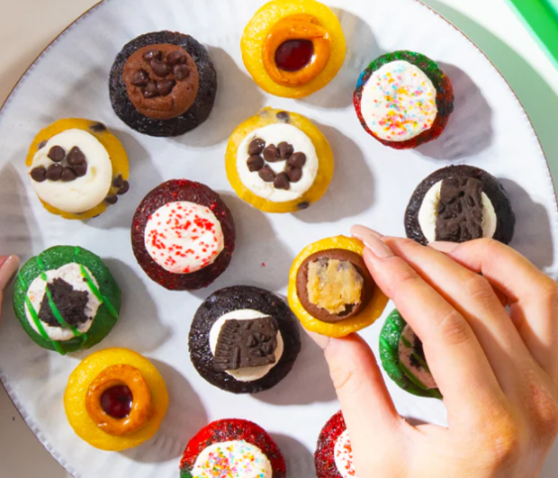

Fresh Fruits and Fresh Flower
Tiny Cupcakes
 At Chi-Town Bakery, we believe happiness fits in the palm of your hand. What started as weekend cupcakes experiments in a Chicago kitchen turned into a neighborhood favorite for anyone craving something sweet, but not too big. We bake everything from scratch using real butter, cage-free eggs, and Midwest-grown ingredients. Every tiny muffin and bundtlet is made with care, baked fresh each morning, and finished with a signature glaze or crumble.
Bundt Cakes
 Need something special for your next meeting, party, or gift? Chi-Town
Bakery offers mini dessert platters, custom bundt boxes, and corporate
gift sets wrapped with signature Chi-Town flair.
Need something special for your next meeting, party, or gift? Chi-Town
Bakery offers mini dessert platters, custom bundt boxes, and corporate
gift sets wrapped with signature Chi-Town flair.
Learn more about how we make our bundt cakes and tiny cupcakes!